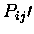

For various reasons, it is often useful to derive `average`
structures (i.e. for homology modelling, molecular replacement
search objects, etc.). STAMP output provides an obvious starting
point for obtaining an average structure. AVESTRUC reads in a
STAMP alignment file, and generates another PDB file containing
averaged coordaintes (either as C alpha or as a polyalanine
structure).
The format is:
avestruc -f <STAMP alignment file>
[ -polyA -c <STAMP char> -t <threshold> -w <window> -aligned ]
`-f' specifies the file to be considered. Note that this MUST BE
a STAMP alignment file, containing both transformations and a
sequence alignment. It will not work on transformation files
lacking sequence alignment data or STAMP data.
`-polyA' generate polyalanine model, the default is a C alpha
model
`-c <STAMP char>' `-t <threshold>' `-w <window>'
these three parameters tell the program how to define structurally
equivalent residues. `STAMP char' is the label of the STAMP field
specified by the `#' character in the alignment file.
`threshold' is the minimum (or maximum in the case of RMS deviation)
value of the specified STAMP parameter tolerated, and `window' tells
the minimum number of residues over which this must be true for
structural equivalence. This is less complicated than it sounds.
The default is as described in [1]:
STAMP char = `G' (i.e.
)
threshold = 6.0
window = 3
(i.e. stretches of three or more residues having
6.0$">
are considered equivalent)
`-aligned' this flag will generate an averaged position for all positions
structures are present at a position (i.e. positions not containing any
gaps are deamed equivalent). The temperature factor will then distinguish
between genuine structural equivalences and fortitously aligned residues.
`-ident' `-cons' these flags will name residues either as a single amino acid
type (ident) or a conserved type (cons) according to the sequence alignment.
See the appropriate sections in the preceding chapter for a further explanation.